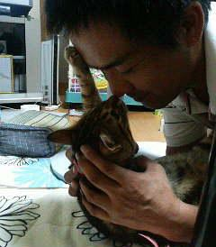

自己紹介

ハンドルネーム「NekoCreate」と申します。
なぜこの名前に決めたのかというと、とにかく猫が大好きなのです。
プログラミング経験というほどでもありませんが、仕事がアフィリエイトですので、ExcelVBAやUWSC、ネットで拾ってきたPHPソースなどを組み合わせて、仕事に活かしておりました。
現在は、Ruby on Railsの勉強に励んでおります。
人に喜ばれるような便利なサービスを作れるようになりたいです。
プロフィール
- ハンドルネーム：NekoCreate
- 生年月日：1974年9月20日
- 年齢：41歳
- 住んでいるところ：北陸富山県の田舎町
- 職業：アフィリエイター